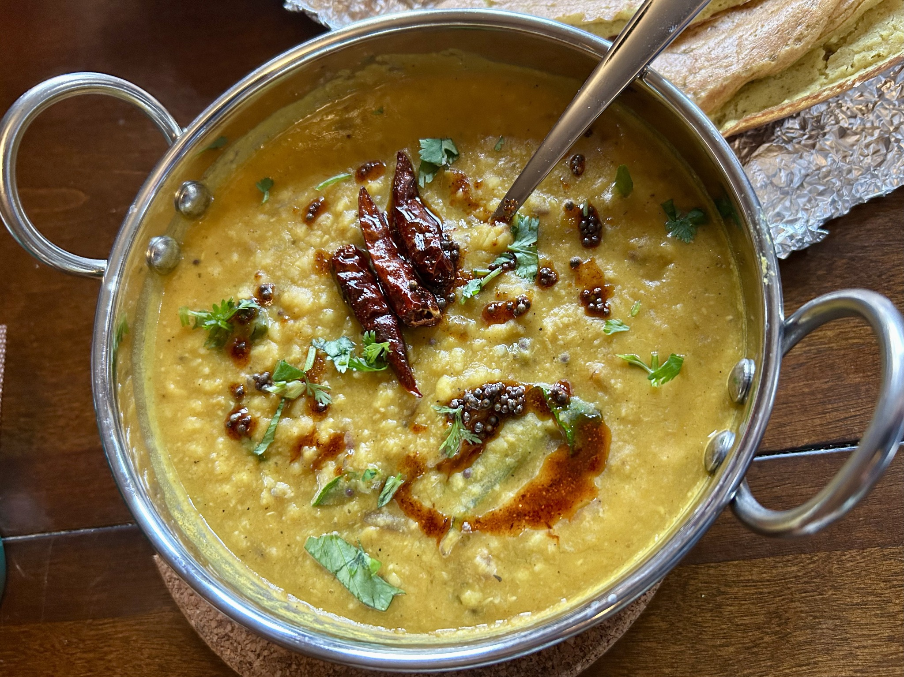

Main
Tadka Dal
Masoor–moong dal cooked soft, folded into tomato masala and finished with the part that makes it sing: hot ghee, cumin, curry leaves and dried chilli.

Dal
- 1/2 cup dal, a mix of husk-free masoor and moong
- 1 1/2 cups water
- 1/2 tsp methi
Masala
- About 1/2 tbsp oil
- 1/2 tsp cumin seeds
- 1/2 tsp mustard seeds
- 1 tbsp ginger-garlic paste
- 1/2 small red onion, finely chopped
- 1/2 tsp turmeric
- 1/2 tsp chilli powder
- 1/2 tsp salt
- 1 tsp amchur
- 1 tsp garam masala
- 1/2 cup fresh tomato or tomato purée
For the tadka
- Ghee
- Cumin seeds
- Curry leaves
- Dried chilli
- Chilli powder or paprika, for colour
- Fresh coriander
Method
- Pressure-cook the dal, water and methi for 12 minutes, then allow a natural release.
- Heat the oil and fry the cumin seeds, mustard seeds, ginger-garlic and onion until the onion is cooked.
- Add the turmeric, chilli powder, salt, amchur, garam masala and tomato. Cook into a compact masala.
- Combine with the cooked dal and adjust the consistency.
- Heat ghee with cumin seeds, curry leaves and dried chilli. Add chilli powder or paprika for colour and pour the sizzling tadka over the dal.
- Finish with fresh coriander.
Notes
Keep the final tempering separate until the end. The contrast between mellow dal and freshly fried spices gives this simple pot its character.